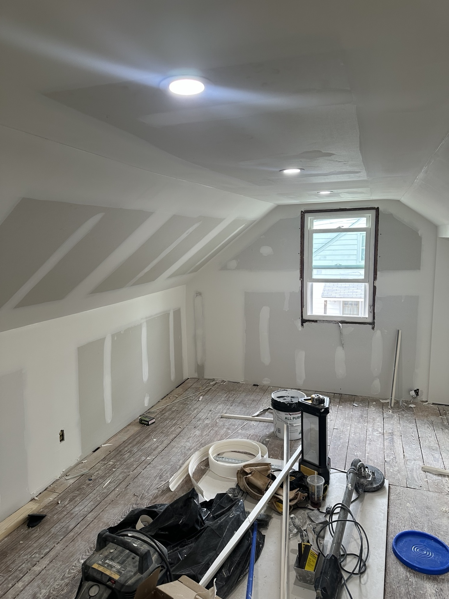

Drywall Repair in South Jersey
Wall patches, ceiling repairs, spackle work, sanding, and paint-ready repairs for homeowners, sellers, landlords, and property managers.

Clean repairs. Smooth finish. Ready for primer and paint.
Clean Drywall Repairs That Are Ready for Paint
Damaged drywall makes a room look unfinished fast. Small holes, dents, cracked seams, ceiling stains, and poorly patched walls can stand out even after painting if the repair is not done correctly.
South Jersey Repairs focuses on clean drywall repair: proper prep, smooth patching, sanding between coats, and leaving the area ready for primer and paint.
Wall Patching
Small holes, anchor damage, dents, door-handle damage, and general wall patching.
Ceiling Repair
Ceiling drywall repair, patching, sanding, and paint-ready finish work where possible.
Turnover Repairs
Tenant move-out drywall repairs, nail pops, scuffs, and property maintenance punch lists.
Recent Drywall Project
This featured drywall repair project included surface prep, patching damaged wall areas, applying compound, sanding between coats, and preparing the wall for primer and paint.




Drywall Services
- Small hole repair
- Medium wall patches
- Ceiling drywall repair
- Water-damaged drywall repair
- Drywall tape repair
- Nail pop repair
- Corner bead repair
- Spackle and sanding
- Texture blending where possible
- Paint-ready patching
- Tenant turnover drywall repairs
- Property maintenance drywall work
Featured Project Scope
- Protected surrounding work area
- Removed loose drywall paper
- Applied drywall patch where needed
- Used spackle or joint compound
- Feathered edges with a spackle knife
- Allowed proper dry time
- Sanded smooth
- Applied additional coat if needed
- Final sand and paint-ready finish
Drywall Repair FAQ
Can you make a drywall patch disappear completely?
A clean repair can be made paint-ready, but the final look depends on lighting, wall texture, paint age, and whether the whole wall is painted after priming.
Do small patches still need primer?
Yes. Primer helps prevent flashing, where a patch shows through because it absorbs paint differently than the surrounding wall.
Can you help with rental turnover drywall repairs?
Yes. South Jersey Repairs can help with nail holes, wall damage, scuffs, door-handle dents, and punch-list repairs between tenants.
What photos should I send?
Send a close-up, a wider room photo, and a side-angle photo if the patch is in a visible area. Include your town and whether the repair is for a home, rental, seller prep, or move-out.
Need Drywall Repair in South Jersey?
Text photos of the damaged wall or ceiling, your town, and what you need repaired. South Jersey Repairs helps with drywall repair, property maintenance, minor plumbing repairs, bathroom remodeling, seller prep, and rental turnovers.